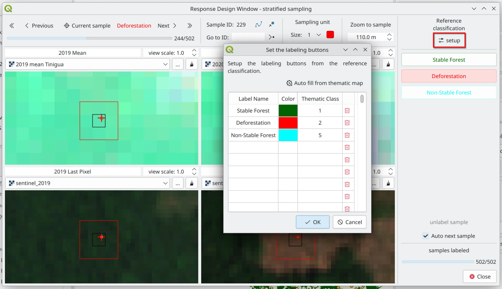

Response Design#
The response design encompasses the protocols and methodologies used to determine the reference or “true” classification of sampled units in an accuracy assessment [Stehman and Czaplewski, 1998]. It ensures that the comparison between map and reference data is accurate and reliable, directly impacting the validity of accuracy estimates.
One of the key innovations of AcATaMa is its integrated and efficient implementation of all essential response-design components within a single, user-friendly interface. The Response Design window offers a well-organized, intuitive workspace for:
Configuring the sampling unit and spatial support
Managing reference data
Establishing reference classifications
Optimizing the labeling workflow

Response Design Interface#
According to Olofsson et al. [2014], an effective response design must include well-defined procedures for:
Selecting reference data sources
Applying labeling protocols
Specifying the spatial support
Interpretation rules
Establishing criteria for agreement between map and reference classifications
{kind=link}
The response design can be conceptually separated into two components:
A) Evaluation Protocol: The procedures used to gather information that contributes to the determination of the reference classification.
B) Labeling Protocol: The classification of the sampling unit based on the information obtained from the evaluation protocol.
Sampling Unit and Spatial Support#
The sampling unit is a structure that defines a specified space for the comparison of the thematic map and reference data, and defines the space for the labeling protocol.
The sampling unit in an accuracy assessment protocol is crucial because it determines how the landscape is partitioned and represented, influencing the measurement of agreement and disagreement between the map and reference data.
Pixel-Based Sampling#
When a single pixel is used as the spatial unit, a critical decision must be made regarding the labeling process, whether to assign labels based solely on what is observed within each individual pixel or to consider the surrounding context. Pixel-based sampling units are better suited for very detailed assessments.
Block-Based Sampling#
When using blocks of pixels (e.g., a 3×3 pixel block) as the sampling unit, the surrounding area is considered, which can [Stehman and Wickham, 2011]:
Reduce sensitivity to geo-referencing errors
Smooth out small-scale misalignments
Provide a more accurate representation of the land cover
However, blocks can introduce heterogeneity within the sampling unit, which could complicate analysis.
Tip
There is not a universally “best” spatial assessment unit for accuracy assessment in thematic maps. The choice should be based on the specific needs of the assessment. If minimizing location errors is critical, a larger unit like a block of pixels might be preferred. If precision and detail are more important, pixel-based assessments might be the best option.
Reference Data#
Reference data can be obtained through various methods, including high-resolution imagery, field observations, or ancillary datasets, with the goal of maintaining higher accuracy than the map being assessed.
A dynamic grid layout enables users to simultaneously view and manage various layers of reference data from any source supported in QGIS.

Reference Classification#
The classes available come from the thematic map. The evaluator must select the reference classes as labeling buttons using the “Labeling setup” option in AcATaMa.
{kind=link}
Labeling Protocol#
The labeling protocol assigns a label from the reference classification (through labeling buttons) to the sampling unit, supported by the reference data and the evaluation protocol.

Customizable Buttons and Shortcuts#
Customizable buttons and keyboard shortcuts simplify the labeling protocol, reducing per-sample labeling time.

Supported: letters, numbers, function keys, and combinations with Ctrl, Alt, Shift, or Meta.
Warning
Avoid using keys or key combinations that are already assigned by your operating system or QGIS to prevent shortcut conflicts.
Evaluation Protocol#
Procedures used to define a class from the reference classification to a sampling unit based on:
The space of the sampling unit
The experience of the evaluator
Reference data and observations
At most cases (and recommended), the evaluation protocol applies the reference classification to the sampling unit and its space, not only to the sample itself as a point unit.
In some cases, the evaluator may visually scan the sampling unit and record qualitative observations that contribute to an eventual classification. In other cases, the assessment protocol may specify the recording of species composition, canopy closure, or tree size distribution, or require other quantitative data necessary to distinguish the reference classification.
Additional Features#
Google Earth Integration#
The ability to open sample locations in Google Earth for further validation.
CCD Plugin Integration#
The Response Design window incorporates supplementary information from the Continuous Change Detection (CCD) algorithm (through the QGIS CCD-Plugin, also developed by SMByC). This allows users to analyze trends and breakpoints of change over multiple years, providing valuable time series insights for sample locations.
Best Practices#
A robust response design enhances the credibility of accuracy assessments and provides a strong foundation for estimating thematic map reliability [Stehman and Czaplewski, 1998, Olofsson et al., 2014].
Important
AcATaMa simplifies, organizes, and optimizes the process of assigning reference labels to sampled units, ensuring consistent interpretation across interpreters. To mitigate and minimize interpretation bias, consider having multiple independent interpreters review each sample, with disagreements resolved by consensus for the final label.